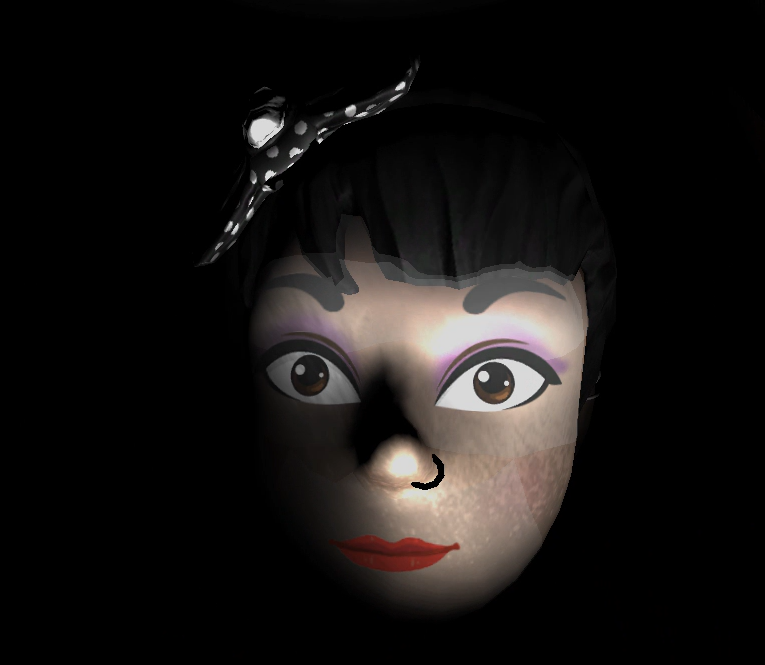
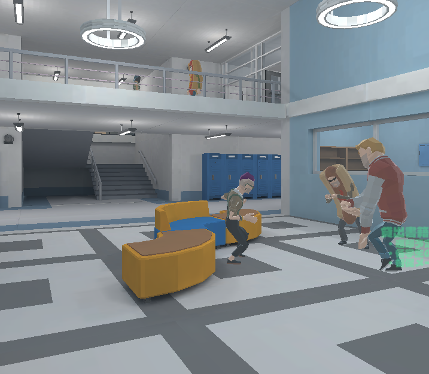
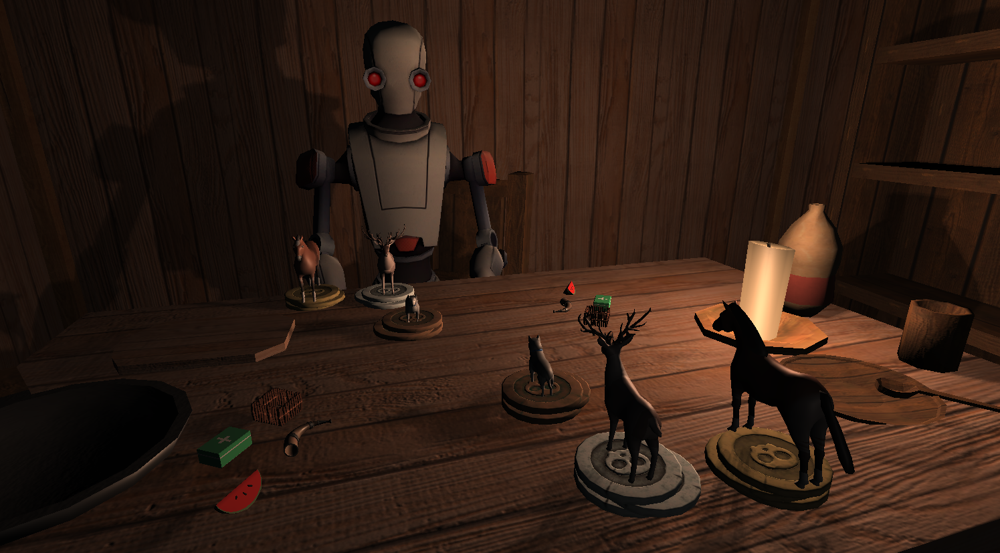
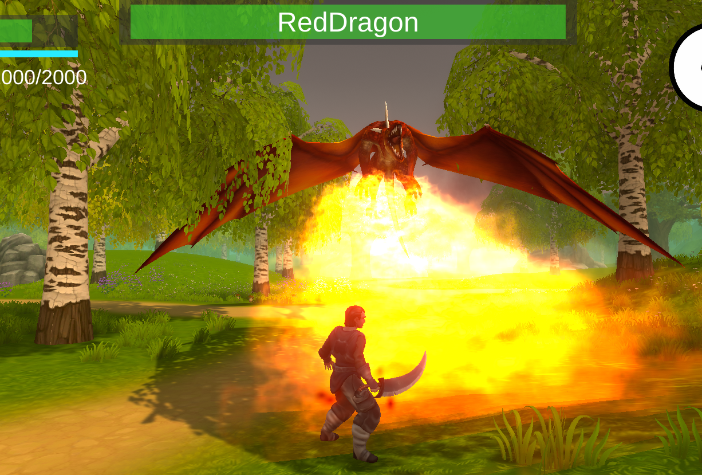
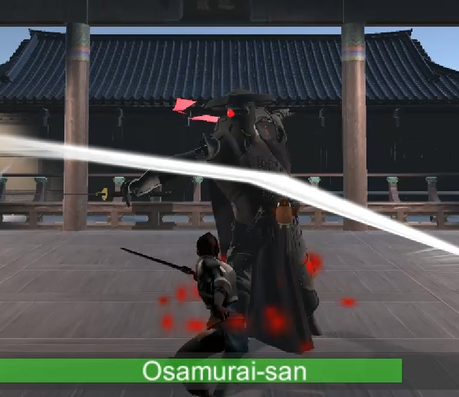
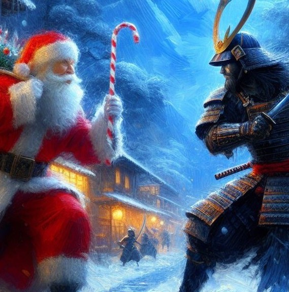

制作ゲーム一覧

ホラー / アドベンチャー / 謎解き
ホラーゲーム
表現や演出にこだわったホラーゲーム。敵から隠れながら謎解きをして、閉ざされた建物からの脱出を目指す。

シミュレーション / アドベンチャー
図書館警察シミュレーター
1~2時間遊べるシミュレーションゲーム。一時間以上飽きずに遊んでもらえるゲームを目指し、ボリュームと飽きさせないシステムに注力。

ストラテジー / 機械学習
機械学習ボードゲーム
プレイングをAIに学習させて、自分だけの「最強のCPU」を作るストラテジーゲーム。機械学習を１から実装。

アクション / RPG
RPG
一般的なアクションゲーム。初めてUnityで制作したゲーム。Unityの自由度の高さに驚く。
脱出 / 謎解き / Java
猫の脱出
大学1回生で初めてチーム(一応)で作ったゲーム。JavaのGUIを独学で学んだ。

アクション / ソードアクション
サムライ対決
回避やカウンターを駆使して戦うアクションゲーム。アニメーションの修正などstrong>細かいテクニックを学んだ。諸事情で一週間で作った。

アクション / タイピング
Winter Wars
サマーウォーズのように、忙しなくキーボードをたたくようなアクションゲーム。様々な技術を使って多彩な攻撃方法を実装した。